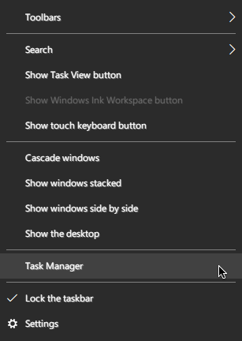
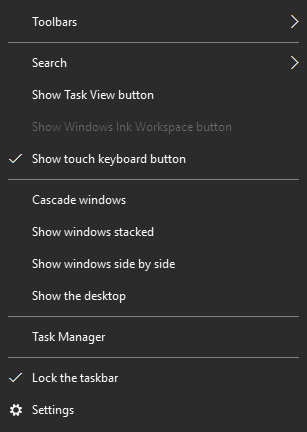
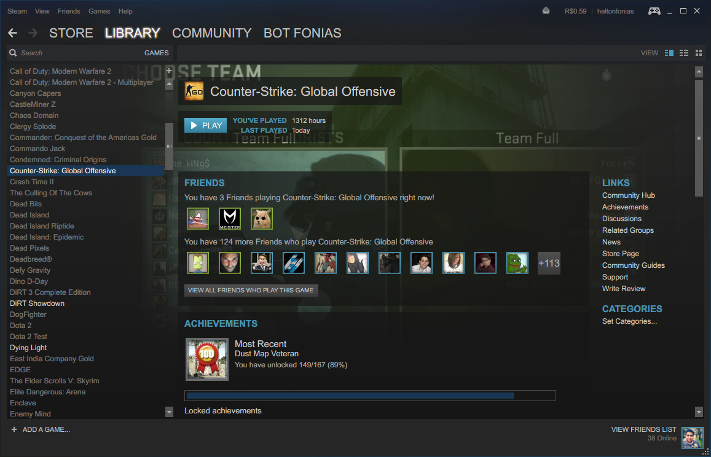
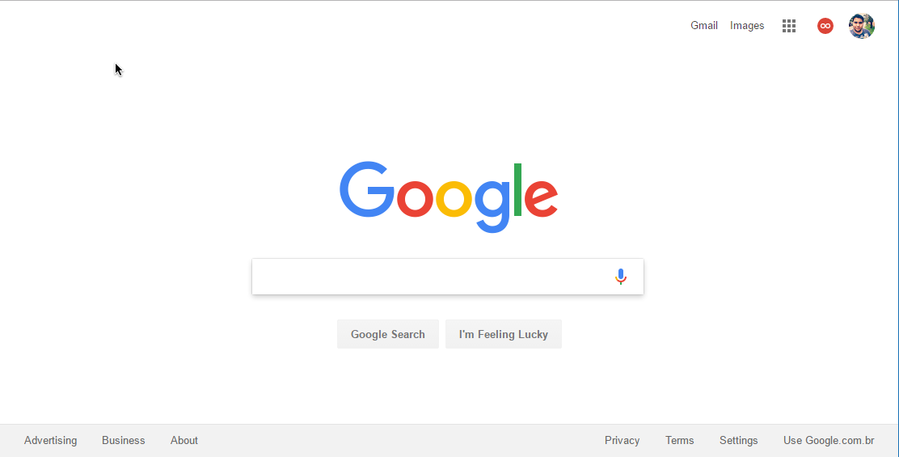

Menu de contexto do Taskbar
By:



Janela do Windows Explorer
Qualquer página no Google Chrome (Facebook como Exemplo)
a buceta da Steam também funciona!


Home do Google

Arraste o mouse para ver a comparação
Como eu faço pra ter essa viadagem ae no PC?
Bom, está disponivel aqui no site 2 links o link do Instalador do programa e o Patch no qual faz ele funcionar bem no Windows 10. a configuração dele vem do gosto do usuário. caso queiram saber como configurei o meu pra deixar desse jeito. segue o print.


BAIXAR O PATCH PRO WIN 8 E 10
Essa porra é segura, tem vírus não carai! :v LoL
BAIXAR O INSTALADOR